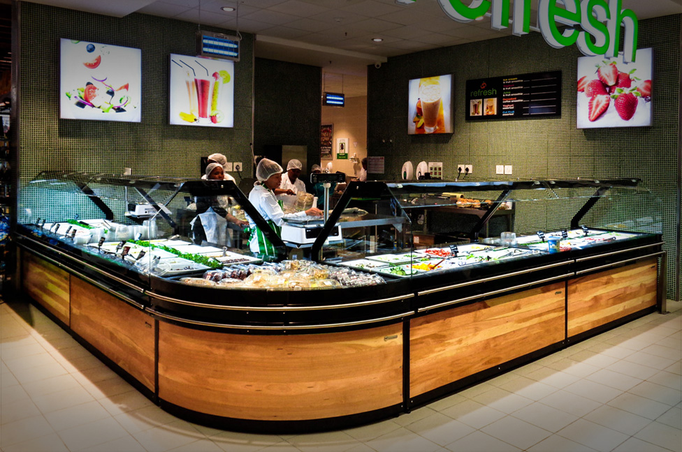

About Us
Better and better; this is what we strive for on behalf of the millions of customers who’ve made Checkers a household name since 1956.
But what does it really mean to be “better and better”? Well, our track record for pushing boundaries can be traced back to the opening of our maiden store in Mayfair, Johannesburg.


